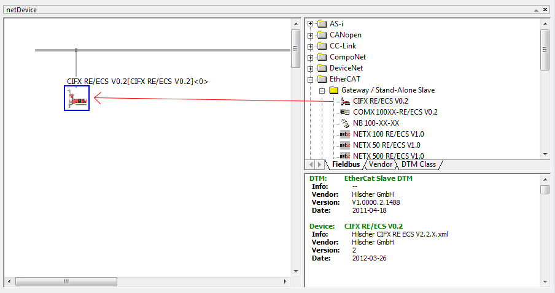
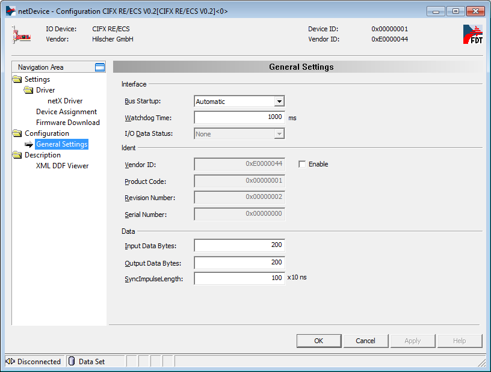
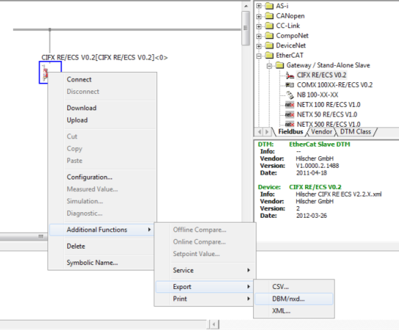

IO750 Usage Notes
IO750 Usage Notes — Usage information about the I/O module
Warmstart
The warmstart mode allows a configuration subset to be automatically loaded to the Simulink driver block. This configuration option is limited to the number of input and output bytes and the product code.
SYCON.net Configuration Tool
![[Tip]](images/tip.png) | Tip |
|---|---|
You can download the SYCON.net Configuration Tool here: V1.400 Build 170125. |
![[Note]](images/note.png) | Note |
|---|---|
Only SYCON.net V1.400 Build 170125 has been tested. There is no guarantee therefore that other versions will work with the Speedgoat I/O Blockset. |
For some advanced scenarios the EtherCAT subordinate device may need to be configured with the SYCON.net configuration tool.
Open SYCON.net and locate the "CIFX RE/ECS" EtherCAT Stand-Alone Slave. Drag and drop the device to the main panel.

Double-click on the icon to open the Configuration window.
Navigate to Configuration, General Settings. These are the parameters that you can use to setup the EtherCAT subordinate device.

Note The Input Data Bytes are referenced to the Master RxPdo. In reality they are the output data bytes of the subordinate device. By consequence the output data bytes are the part of the TxPdo and are the input data bytes of the subordinate device.
Apply the configuration and close the windows. Right click on the Slave icon and select Additional Functions, Export, DBM/nxd.

Select a name for the file, e.g.: my_slave.nxd. Save the file in your current MATLAB workspace.
In MATLAB, locate the file and use the following script to load the configuration to the target machine.
IO750 = sg_IO75X_struct(); % Define default structure IO750.protocol = 'IO750'; % Protocol Speedgoat ID IO750.cardid = '1'; % Card ID as defined in the model IO750.configfiles = '1'; % Number of configuration files IO750.configfile1 = 'my_slave.nxd'; % Name of configuration file sg_IO75X_loadconfig(IO750);
Configure the driver blocks according to the configuration defined in SYCON.net. In the Setup driver block select "Configuration mode: Configuration file".
When you build the model, the firmware and configuration are loaded to the IO750 EtherCAT subordinate device I/O module.
EtherCAT Configurator
You can use the Beckhoff EtherCAT Configurator or TwinCAT solution with the IO750 module. An EtherCAT Slave Information (ESI) XML file is provided for use with either tool (default name: Hilscher CIFX RE ECS V2.2.X.xml).
Once the ESI file is installed in the Beckhoff repository, the configuration tool will automatically recognize the IO750 device during network scan.
Before a scan can be performed the Simulink Real-Time application must be built and loaded on to the target machine.
Front Plate Description
The IO750 acts as one EtherCAT subordinate device exclusively. The two RJ45 connectors simply serve to build up a line-based network structure. Plug the cable from the EtherCAT main device or the previous subordinate device into the first socket. Connect the second socket with the next EtherCAT subordinate device. The LEDs described below indicate the communication status of the single EtherCAT subordinate device.


LED Status Description
| LED | Color | State | Meaning |
| SYS | Green | On | Operating system running |
| Green/Yellow | Blinking | Second stage bootloader is waiting for firmware | |
| Yellow | On | Bootloader netX (= romloader) is waiting for second stage bootloader | |
| Off | Off | Power supply for the device is missing or hardware defect | |
| RUN/COM1 | Off | Off | INIT: The device is in state INIT |
| Green | Blinking (2,5 Hz) | PRE-OPERATIONAL: The device is in PRE-OPERATIONAL state | |
| Green | Single flash | SAFE-OPERATIONAL: The device is in SAFE-OPERATIONAL state | |
| Green | On | OPERATIONAL: The device is in OPERATIONAL state | |
| ERR/COM2 | Off | Off | No error: The EtherCAT communication of the device is in working condition |
| Red | Blinking (2,5 Hz) | Invalid configuration: General Configuration Error. Possible reason: State change commanded by master is impossible due to register or object settings | |
| Red | Single flash | Local error: Subordinate device application has changed the EtherCAT state autonomously. Possible reason 1: A host watchdog timeout has occurred. Possible reason 2: Synchronization Error, device enters Safe-Operational automatically | |
| Red | Double flash | Application watchdog timeout: An application watchdog timeout has occurred. Possible reason: Sync Manager Watchdog timeout. |
Note that only the IO750 PCI and PCIe modules have the SYS LED. This LED does not feature on the IO750 mPCIe module.
Status Codes
For the list of status codes, please refer to Status Codes for Protocols Supported with the IO64x/IO75x Modules.